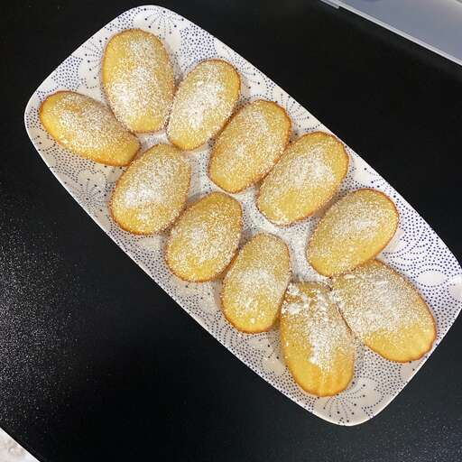

French Butter Cake (Madeleines)

Ingredients -
- ¼ cup butter
- 2 large eggs
- ¾ teaspoon vanilla extract
- ⅛ teaspoon salt
- ⅓ cup white sugar
- ½ cup all-purpose flour
- 1 tablespoon lemon zest
- ⅓ cup granulated sugar for decoration
Steps -
- Preheat the oven to 375 degrees F (190 degrees C). Butter and flour 12 (3-inch) madeleine molds; set aside.
- Melt butter and let cool to room temperature.
- Beat eggs, vanilla, and salt in a small mixing bowl at high speed until light. Gradually add sugar and
continue beating at high speed until mixture is thick and pale and ribbons form in bowl when beaters are
lifted, 5 to 10 minutes. Sift flour into the egg mixture, a third at a time, gently folding after each
addition. Add lemon zest and pour melted butter around the edge of the batter. Quickly but gently fold
butter into the batter.
- Spoon batter into molds; it will mound slightly above tops.
- Bake until cakes are golden and the tops spring back when gently pressed with your fingertip, 14 to 17
minutes.
- Use the tip of the knife to loosen madeleines from the pan; invert onto a rack. Immediately sprinkle warm
cookies with granulated sugar.
Tip -
Madeleines are best eaten the day they're baked. Leftover madeleines are wonderful when dunked into coffee or
tea.